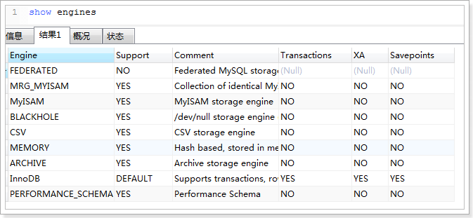

第10章 - MySQL性能优化
学习目标：
- 了解MySQL优化
- 了解常见的优化思路
- 了解查询优化
- 了解索引优化
- 了解存储优化
- 了解数据库结构优化
- 了解查询缓存等缓存优化
1 优化介绍
在进行优化讲解之前，先请大家记住不要听信你看到的关于优化的“绝对真理”，而应该是在实际的业务场景下通过测试来验证你关于执行计划以及响应时间的假设。本课程只是给大家提供一些优化方面的方向和思路，而具体业务场景的不同，使用的MySQL服务版本不同，都会使得优化方案的制定也不同。
1.1 MySQL介绍
MySQL凭借着出色的性能、低廉的成本、丰富的资源，已经成为绝大多数互联网公司的首选关系型数据库。可以看到Google，Facebook，Twitter，百度，新浪，腾讯，淘宝，网易，久游等绝大多数互联网公司数据库都是用的MySQL数据库，甚至将其作为核心应用的数据库系统。
虽然性能出色，但所谓“好马配好鞍”，如何能够更好的使用它，已经成为开发工程师的必修课，我们经常会从职位描述上看到诸如“精通MySQL”、“SQL语句优化”、“了解数据库原理”等要求。我们知道一般的应用系统，读写比例在10:1左右，而且插入操作和一般的更新操作很少出现性能问题，遇到最多的，也是最容易出问题的，还是一些复杂的查询操作，所以查询语句的优化显然是重中之重。
我们将这里进行一个较为全面的分析，让大家了解到MySQL的性能到底与哪些地方有关，以便于让大家寻找出其性能问题的根本原因，而尽可能清楚的知道该如何去优化自己的数据库。
1.2 优化要考虑的问题
注意：优化有风险，涉足需谨慎！
1.2.1 优化可能带来的问题
- 优化不总是对一个单纯的环境进行，还很可能是一个复杂的已投产的系统！
- 优化手段有很大的风险，一定要意识到和预见到！
- 任何的技术可以解决一个问题，但必然存在带来一个问题的风险！
- 对于优化来说调优而带来的问题,控制在可接受的范围内才是有成果。
- 保持现状或出现更差的情况都是失败！
1.2.2 优化的需求
- 稳定性和业务可持续性,通常比性能更重要！
- 优化不可避免涉及到变更，变更就有风险！
- 优化使性能变好，维持和变差是等概率事件！
- 优化应该是各部门协同，共同参与的工作，任何单一部门都不能对数据库进行优化！
所以优化工作,是由业务需要驱使的！！！
1.2.3 优化由谁参与
在进行数据库优化时，应由数据库管理员、业务部门代表、应用程序架构师、应用程序设计人员、应用程序开发人员、硬件及系统管理员、存储管理员等，业务相关人员共同参与。
1.3 优化的思路
1.3.1 优化的方向
在数据库优化上有两个主要方向：即安全与性能。
- 安全 ---> 数据安全性
- 性能 ---> 数据的高性能访问
本课程主要是在性能优化方向进行介绍
1.3.2 优化的维度

从上图中可以看出，我们把数据库优化分为四个纬度：硬件，系统配置，数据库表结构，SQL及索引
硬件： CPU、内存、存储、网络设备等
系统配置： 服务器系统、数据库服务参数等
数据库表结构： 高可用、分库分表、读写分离、存储引擎、表设计等
Sql及索引： sql语句、索引使用等
- 从优化成本进行考虑：硬件>系统配置>数据库表结构>SQL及索引
- 从优化效果进行考虑：硬件<系统配置<数据库表结构<SQL及索引
1.3.3 优化的工具
检查问题常用工具
msyqladmin #mysql客户端，可进行管理操作 mysqlshow #功能强大的查看shell命令 show [SESSION | GLOBAL] variables #查看数据库参数信息 SHOW [SESSION | GLOBAL] STATUS #查看数据库的状态信息 SHOW ENGINE INNODB STATUS Innodb #引擎的所有状态 information_schema #获取元数据的方法SHOW PROCESSLIST #查看当前所有连接session状态 explain #获取查询语句的执行计划how index #查看表的索引信息 slow-log #记录慢查询语句 mysqldumpslow #分析slowlog文件的 不常用但好用的工具
xxxxxxxxxxzabbix #监控主机、系统、数据库（部署zabbix监控平台）mysqlslap #分析慢日志sysbench #压力测试工具workbench #管理、备份、监控、分析、优化工具（比较费资源）pt-query-digest #分析慢日志mysql profiling #统计数据库整体状态工具Performance Schema mysql #性能状态统计的数据
1.3.4 数据库使用优化思路
本课程尽可能的全面介绍数据库的调优思路，但是在多数时候，我们进行调优不需要进行这么全面、大范围的调优，一般情况下，我们进行数据库层面的优化就可以了，那我们该如何调优的呢？
应急调优的思路：
针对突然的业务办理卡顿，无法进行正常的业务处理！需要立马解决的场景！
show processlist（查看链接session状态）
explain(分析查询计划)，show index from table（分析索引）
通过执行计划判断，索引问题（有没有、合不合理）或者语句本身问题
show status like '%lock%'; # 查询锁状态
SESSION_ID; # 杀掉有问题的session
常规调优的思路：
针对业务周期性的卡顿，例如在每天10-11点业务特别慢，但是还能够使用，过了这段时间就好了。
- 查看slowlog，分析slowlog，分析出查询慢的语句。
- 按照一定优先级，进行一个一个的排查所有慢语句。
- 分析top sql，进行explain调试，查看语句执行时间。
- 调整索引或语句本身。
2 查询优化
2.1 MySQL查询流程
我们该如何进行sql优化呢， 首先我们需要知道，sql优化其实主要是解决查询的优化问题，所以我们先从数据库的查询开始入手，下面这幅图显示了查询的执行路径：
① 客户端将查询发送到服务器；
② 服务器检查查询缓存，如果找到了，就从缓存中返回结果，否则进行下一步。
③ 服务器解析，预处理。
④ 查询优化器优化查询
⑤ 生成执行计划，执行引擎调用存储引擎API执行查询
⑥服务器将结果发送回客户端。

查询缓存 在解析一个查询语句之前，如果查询缓存是打开的，那么MySQL会优先检查这个查询是否命中查询缓存中的数据，如果命中缓存直接从缓存中拿到结果并返回给客户端。这种情况下，查询不会被解析，不用生成执行计划，不会被执行。
语法解析和预处理器 MySQL通过关键字将SQL语句进行解析，并生成一棵对应的“解析树”。MySQL解析器将使用MySQL语法规则验证和解析查询。
查询优化器 语法书被校验合法后由优化器转成查询计划，一条语句可以有很多种执行方式，最后返回相同的结果。优化器的作用就是找到这其中最好的执行计划。
查询执行引擎 在解析和优化阶段，MySQL将生成查询对应的执行计划，MySQL的查询执行引擎则根据这个执行计划来完成整个查询。最常使用的也是比较最多的引擎是MyISAM引擎和InnoDB引擎。mysql5.5开始的默认存储引擎已经变更为innodb了。
2.2 查询优化
前面的查询流程分析，我们大概了解了MySQL是如何执行的，其中涉及到的部分我们在后面会一一道来。现在我们先从查询优化部分开始。
sql是我们和数据库交流最重要的部分，所以我们在调优的时候，需要花费的大量时间就在sql调优上面。常见的分析手段有慢查询日志，EXPLAIN 分析查询，通过定位分析性能的瓶颈，才能更好的优化数据库系统的性能。
2.2.1 慢查询
- 慢查询日志开启
在配置文件my.cnf或my.ini中在[mysqld]一行下面加入两个配置参数
xxxxxxxxxxlog-slow-queries=/data/mysqldata/slow-query.loglong_query_time=5log-slow-queries参数为慢查询日志存放的位置，一般这个目录要有mysql的运行帐号的可写权限，一般都将这个目录设置为mysql的数据存放目录；
long_query_time=5中的5表示查询超过五秒才记录；
还可以在my.cnf或者my.ini中添加log-queries-not-using-indexes参数，表示记录下没有使用索引的查询。
- 慢查询分析
我们可以通过打开log文件查看得知哪些SQL执行效率低下 ，从日志中，可以发现查询时间超过5 秒的SQL，而小于5秒的没有出现在此日志中。
如果慢查询日志中记录内容很多，可以使用mysqldumpslow工具（MySQL客户端安装自带）来对慢查询日志进行分类汇总。mysqldumpslow对日志文件进行了分类汇总，显示汇总后摘要结果。
进入log的存放目录，运行：
xxxxxxxxxx[root@mysql_data]# mysqldumpslow slow-query.logReading mysql slow query log fromslow-query.logCount: 2 Time=11.00s (22s) Lock=0.00s (0s)Rows=1.0 (2), root[root]@mysqlselect count(N) from t_user;
mysqldumpslow命令
/path/mysqldumpslow -s c -t 10/database/mysql/slow-query.log
这会输出记录次数最多的10条SQL语句，其中：
-s, 是表示按照何种方式排序，c、t、l、r分别是按照记录次数、时间、查询时间、返回的记录数来排序，ac、at、al、ar，表示相应的倒叙
-t, 是top n的意思，即为返回前面多少条的数据；
-g, 后边可以写一个正则匹配模式，大小写不敏感的；
例如：
/path/mysqldumpslow -s r -t 10/database/mysql/slow-log
得到返回记录集最多的10个查询。
/path/mysqldumpslow -s t -t 10 -g “leftjoin” /database/mysql/slow-log
得到按照时间排序的前10条里面含有左连接的查询语句。
使用mysqldumpslow命令可以非常明确的得到各种我们需要的查询语句，对MySQL查询语句的监控、分析、优化是MySQL优化非常重要的一步。开启慢查询日志后，由于日志记录操作，在一定程度上会占用CPU资源影响mysql的性能，但是可以阶段性开启来定位性能瓶颈。
2.2.2 EXPLAIN
EXPLAIN可以帮助开发人员分析SQL问题，EXPLAIN显示了MySQL如何使用使用SQL执行计划，可以帮助开发人员写出更优化的查询语句。使用方法，在select语句前加上Explain就可以了：
EXPLAIN SELECT * FROM products
结果的列的说明如下：
1) id
SELECT识别符。这是SELECT查询序列号。这个不重要
2) select_type
表示SELECT语句的类型。
- simple:简单select（不使用union或子查询）。
- primary:最外面的select。
- union:union中的第二个或后面的select语句。
- dependent union:union中的第二个或后面的select语句，取决于外面的查询。
- union result:union的结果。
- subquery:子查询中的第一个select。
- dependent subquery:子查询中的第一个select，取决于外面的查询。
- derived:导出表的select（from子句的子查询）。
3) table
显示这查询的数据是关于哪张表的。
4) type
区间索引，这是重要的列，显示连接使用了何种类型。从最好到最差的连接类型为：
system > const > eq_ref > ref > ref_or_null > index_merge > unique_subquery > index_subquery > range > index > ALL
一般来说，得保证查询至少达到range级别,最好能达到ref。
- system：表仅有一行，这是const类型的特列，平时不会出现，这个也可以忽略不计。
- const：数据表最多只有一个匹配行，因为只匹配一行数据，所以很快
- eq_ref：mysql手册是这样说的:"对于每个来自于前面的表的行组合，从该表中读取一行。这可能是最好的联接类型，除了const类型。它用在一个索引的所有部分被联接使用并且索引是UNIQUE或PRIMARY KEY"。eq_ref可以用于使用=比较带索引的列。
- ref：查询条件索引既不是UNIQUE也不是PRIMARY KEY的情况。ref可用于=或<或>操作符的带索引的列。
- ref_or_null：该联接类型如同ref，但是添加了MySQL可以专门搜索包含NULL值的行。在解决子查询中经常使用该联接类型的优化。
- index_merge：该联接类型表示使用了索引合并优化方法。在这种情况下，key列包含了使用的索引的清单，key_len包含了使用的索引的最长的关键元素。
- unique_subquery：该类型替换了下面形式的IN子查询的ref: value IN (SELECT primary_key FROM single_table WHERE some_expr) unique_subquery是一个索引查找函数,可以完全替换子查询,效率更高。
- index_subquery：该联接类型类似于unique_subquery。可以替换IN子查询,但只适合下列形式的子查询中的非唯一索引: value IN (SELECT key_column FROM single_table WHERE some_expr)
- range：只检索给定范围的行,使用一个索引来选择行。
- index：该联接类型与ALL相同,除了只有索引树被扫描。这通常比ALL快,因为索引文件通常比数据文件小。
- ALL：对于每个来自于先前的表的行组合,进行完整的表扫描。（性能最差）
5) possible_keys
指出MySQL能使用哪个索引在该表中找到行。如果是空的，没有相关的索引。这时要提高性能，可通过检验WHERE子句，看是否引用某些字段，或者检查字段不是适合索引。
6) key
实际使用到的索引。如果为NULL，则没有使用索引。如果为primary的话，表示使用了主键。
7) key_len
最长的索引宽度。如果键是NULL，长度就是NULL。在不损失精确性的情况下，长度越短越好。
8) ref
显示使用哪个列或常数与key一起从表中选择行。
9) rows
显示MySQL认为它执行查询时必须检查的行数。
10) Extra
执行状态说明，该列包含MySQL解决查询的详细信息
- Distinct:MySQL发现第1个匹配行后,停止为当前的行组合搜索更多的行。
- Not exists:MySQL能够对查询进行LEFT JOIN优化,发现1个匹配LEFT JOIN标准的行后,不再为前面的的行组合在该表内检查更多的行。
- range checked for each record (index map: #):MySQL没有发现好的可以使用的索引,但发现如果来自前面的表的列值已知,可能部分索引可以使用。
- Using filesort:MySQL需要额外的一次传递,以找出如何按排序顺序检索行。
- Using index:从只使用索引树中的信息而不需要进一步搜索读取实际的行来检索表中的列信息。
- Using temporary:为了解决查询,MySQL需要创建一个临时表来容纳结果。
- Using where:WHERE 子句用于限制哪一个行匹配下一个表或发送到客户。
- Using sort_union(...), Using union(...), Using intersect(...):这些函数说明如何为index_merge联接类型合并索引扫描。
- Using index for group-by:类似于访问表的Using index方式,Using index for group-by表示MySQL发现了一个索引,可以用来查 询GROUP BY或DISTINCT查询的所有列,而不要额外搜索硬盘访问实际的表。
3 索引优化
3.1 索引的介绍
创建以下表：
xxxxxxxxxxCREATE TABLE `tb_table` ( `id` int(11) NOT NULL AUTO_INCREMENT COMMENT '主键', `name` varchar(20) DEFAULT NULL COMMENT '姓名', `number` int(11) DEFAULT NULL COMMENT '编号', PRIMARY KEY (`id`), KEY `number` (`number`)) ENGINE=InnoDB AUTO_INCREMENT=1 DEFAULT CHARSET=utf8;
执行以下sql，批量添加10条数据：
xdrop procedure if exists tb_insert; CREATE PROCEDURE tb_insert()BEGINDECLARE i INT;SET i = 0;START TRANSACTION;WHILE i < 10 DO -- 10即插入10条数据 INSERT INTO tb_table (`name`,`number`) VALUES (concat("张三",i),i); SET i = i+1;END WHILE;COMMIT;END;call tb_insert();
在表没有添加索引和添加索引的时候，都执行以下查询：
xxxxxxxxxxSELECT * FROM tb_table WHERE number = 500000然后再添加数据库的数据，插入100万条，再次测试有索引和没有索引的查询语句。
通过上面的对比测试可以看出，索引是快速搜索的关键。MySQL索引的建立对于MySQL的高效运行是很重要的。对于少量的数据，没有合适的索引影响不是很大，但是，当随着数据量的增加，性能会急剧下降。
索引的目的在于提高查询效率，大家可以回忆之前学习的全文检索技术。类似使用字典，如果没有目录（索引），那么我们要从字典的第一个字开始查询到最后一个字才能有结果，可能要把字典中所有的字看一遍才能找到要结果，而目录（索引）则能够让我们快速的定位到这个字的位置，从而找到我们要的结果。
3.2 索引的类型
主键索引 PRIMARY KEY
它是一种特殊的唯一索引，不允许有空值。一般是在建表的时候同时创建主键索引。
xxxxxxxxxxPRIMARY KEY (`id`)唯一索引 UNIQUE
唯一索引列的值必须唯一，但允许有空值。如果是组合索引，则列值的组合必须唯一。可以在创建表的时候指定，也可以修改表结构。
xxxxxxxxxxUNIQUE KEY `num` (`number`) USING BTREE普通索引 INDEX
这是最基本的索引，它没有任何限制。可以在创建表的时候指定，也可以修改表结构
xxxxxxxxxxKEY `num` (`number`) USING BTREE组合索引 INDEX
索引分单列索引和组合索引(联合索引)。单列索引，即一个索引只包含单个列，一个表可以有多个单列索引，但这不是组合索引。组合索引，即一个索引包含多个列。
xxxxxxxxxxKEY `num` (`number`,`name`) USING BTREE注意，组合索引前面索引必须要先使用，后面的索引才能使用。
全文索引 FULLTEXT
全文索引（也称全文检索）是目前搜索引擎使用的一种关键技术。它能够利用分词技术等多种算法智能分析出文本文字中关键字词的频率及重要性，然后按照一定的算法规则智能地筛选出我们想要的搜索结果。
3.3 索引的存储结构
3.3.1 BTree索引
在前面的例子中我们看见有USING BTREE，这个是什么呢？这个就是MySQL所使用的索引方案，MySQL中普遍使用B+Tree做索引，也就是BTREE。
特点：
- BTREE索引以B+树的结构存储数据
- BTREE索引能够加快数据的查询速度
- BTREE索引更适合进行行范围查找
使用的场景：
- 全值匹配的查询，例如根据订单号查询 order_sn='98764322119900'
- 联合索引时会遵循最左前缀匹配的原则,即最左优先
- 匹配列前缀查询，例如：order_sn like '9876%'
- 匹配范围值的查找，例如：order_sn > '98764322119900'
- 只访问索引的查询
3.3.2 哈希索引
Hash索引在MySQL中使用的并不是很多，目前主要是Memory存储引擎使用，在Memory存储引擎中将Hash索引作为默认的索引类型。所谓Hash索引，实际上就是通过一定的Hash算法，将需要索引的键值进行Hash运算，然后将得到的Hash值存入一个Hash表中。然后每次需要检索的时候，都会将检索条件进行相同算法的Hash运算，然后再和Hash表中的Hash值进行比较并得出相应的信息。
特点：
- Hash索引仅仅只能满足“=”,“IN”和“<=>”查询，不能使用范围查询；
- Hash索引无法被利用来避免数据的排序操作；
- Hash索引不能利用部分索引键查询；
- Hash索引在任何时候都不能避免表扫描；
- Hash索引遇到大量Hash值相等的情况后性能并不一定就会比B-Tree索引高；
3.3.2 Full-text全文索引
Full-text索引也就是我们常说的全文索引，MySQL中仅有MyISAM和InnoDB存储引擎支持。
对于文本的大对象，或者较大的CHAR类型的数据，如果使用普通索引，那么匹配文本前几个字符还是可行的，但是想要匹配文本中间的几个单词，那么就要使用LIKE %word%来匹配，这样需要很长的时间来处理，响应时间会大大增加，这种情况，就可使用时FULLTEXT索引了，在生成Full-text索引时，会为文本生成一份单词的清单，在索引时根据这个单词的清单来索引。
注意：
- 对于较大的数据集，把数据添加到一个没有Full-text索引的表，然后添加Full-text索引的速度比把数据添加到一个已经有Full-text索引的表快。
- 针对较大的数据，生成全文索引非常的消耗时间和空间。
- 5.6版本前的MySQL自带的全文索引只能用于MyISAM存储引擎，如果是其它数据引擎，那么全文索引不会生效。5.6版本和之后InnoDB存储引擎开始支持全文索引。
- 在MySQL中，全文索引支队英文有用，目前对中文还不支持。5.7版本之后通过使用ngram插件开始支持中文。
- 在MySQL中，如果检索的字符串太短则无法检索得到预期的结果，检索的字符串长度至少为4字节。
3.4 索引的使用
虽然索引能够为查找带来速度上的提升，但是也会对性能有一些损失。
- 索引会增加写操作的成本
- 太多的索引会增加查询优化器的选择时间
当创建索引带来的好处多过于消耗的时候，才是最优的选择~
使用索引的场景
- 主键自动建立唯一索引；
- 经常作为查询条件在WHERE或者ORDER BY 语句中出现的列要建立索引；
- 作为排序的列要建立索引；
- 查询中与其他表关联的字段，外键关系建立索引
- 高并发条件下倾向建立组合索引；
- 用于聚合函数的列可以建立索引，例如使用count(number)时，number列就要建立索引
不使用索引的场景
- 有大量重复的列不单独建立索引
- 表记录太少不要建立索引，因为没有太大作用。
- 不会作为查询的列不要建立索引
4 存储优化
MySQL中索引是在存储引擎层实现的，这里我们会讲解存储引擎。
执行查询引擎的命令show engines，可以看到MySQL支持的存储引擎结果如下：

mysql支持存储引擎有好几种，咱们这里主要讨论一下常用的Innodb，MyISAM存储引擎。
4.1 存储引擎介绍
4.1.1 InnoDB存储引擎
特点：
- InnoDB存储引擎提供了具有提交、回滚和崩溃恢复能力的事务安全。相比较MyISAM存储引擎，InnoDB写的处理效率差一点并且会占用更多的磁盘空间保留数据和索引。
- 提供了对数据库事务ACID（原子性Atomicity、一致性Consistency、隔离性Isolation、持久性Durability）的支持，实现了SQL标准的四种隔离级别。
- 设计目标就是处理大容量的数据库系统，MySQL运行时InnoDB会在内存中建立缓冲池，用于缓冲数据和索引。
- 执行“select count(*) from table”语句时需要扫描全表，因为使用innodb引擎的表不会保存表的具体行数，所以需要扫描整个表才能计算多少行。
- InnoDB引擎是行锁，粒度更小，所以写操作不会锁定全表，在并发较高时，使用InnoDB会提升效率。即存在大量UPDATE/INSERT操作时，效率较高。
- InnoDB清空数据量大的表时，是非常缓慢，这是因为InnoDB必须处理表中的每一行，根据InnoDB的事务设计原则，首先需要把“删除动作”写入“事务日志”，然后写入实际的表。所以，清空大表的时候，最好直接drop table然后重建。即InnoDB一行一行删除，不会重建表。
使用场景：
- 经常UPDETE/INSERT的表，使用处理多并发的写请求
- 支持事务，必选InnoDB。
- 可以从灾难中恢复（日志+事务回滚）
- 外键约束、列属性AUTO_INCREMENT支持
4.1.2 MyISAM存储引擎
特点：
- MyISAM不支持事务，不支持外键，SELECT/INSERT为主的应用可以使用该引擎。
- 每个MyISAM在存储成3个文件，扩展名分别是：
1) frm：存储表定义（表结构等信息）
2) MYD(MYData)，存储数据
3) MYI(MYIndex)，存储索引
- 不同MyISAM表的索引文件和数据文件可以放置到不同的路径下。
- MyISAM类型的表提供修复的工具，可以用CHECK TABLE语句来检查MyISAM表健康，并用REPAIR TABLE语句修复一个损坏的MyISAM表。
- 在MySQL5.6以前，只有MyISAM支持Full-text全文索引
使用场景：
- 经常SELECT/INSERT的表，插入不频繁，查询非常频繁
- 不支持事务
- 做很多count 的计算。
4.1.3 MyISAM和Innodb区别
InnoDB和MyISAM是许多人在使用MySQL时最常用的两个存储引擎，这两个存储引擎各有优劣，视具体应用而定。基本的差别为：MyISAM类型不支持事务处理，而InnoDB类型支持。MyISAM类型强调的是性能，其执行速度比InnoDB类型更快，而InnoDB提供事务支持已经外部键等高级数据库功能。
具体实现的差别：
- MyISAM是非事务安全型的，而InnoDB是事务安全型的。
- MyISAM锁的粒度是表级，而InnoDB支持行级锁定。
- MyISAM不支持外键，而InnoDB支持外键
- MyISAM相对简单，所以在效率上要优于InnoDB，小型应用可以考虑使用MyISAM。
- InnoDB表比MyISAM表更安全。
4.2 存储优化
4.2.1 禁用索引
对于使用索引的表，插入记录时，MySQL会对插入的记录建立索引。如果插入大量数据，建立索引会降低插入数据速度。为了解决这个问题，可以在批量插入数据之前禁用索引，数据插入完成后再开启索引。
禁用索引的语句： ALTER TABLE table_name DISABLE KEYS 开启索引语句： ALTER TABLE table_name ENABLE KEYS
MyISAM对于空表批量插入数据，则不需要进行操作，因为MyISAM引擎的表是在导入数据后才建立索引。
4.2.2 禁用唯一性检查
唯一性校验会降低插入记录的速度，可以在插入记录之前禁用唯一性检查，插入数据完成后再开启。
禁用唯一性检查的语句：SET UNIQUE_CHECKS = 0; 开启唯一性检查的语句：SET UNIQUE_CHECKS = 1;
4.2.3 禁用外键检查
插入数据之前执行禁止对外键的检查，数据插入完成后再恢复，可以提供插入速度。
禁用：SET foreign_key_checks = 0; 开启：SET foreign_key_checks = 1;
4.2.4批量插入数据
插入数据时，可以使用一条INSERT语句插入一条数据，也可以插入多条数据。
一个sql语句插入一条数据：

一个失去了语句插入多条数据：

4.2.5禁止自动提交
插入数据之前执行禁止事务的自动提交，数据插入完成后再恢复，可以提高插入速度。
禁用：SET autocommit = 0; 开启：SET autocommit = 1;
5 数据库结构优化
5.1 优化表结构
- 尽量将表字段定义为NOT NULL约束，这时由于在MySQL中含有空值的列很难进行查询优化，NULL值会使索引以及索引的统计信息变得很复杂。
- 对于只包含特定类型的字段，可以使用enum、set 等数据类型。
- 数值型字段的比较比字符串的比较效率高得多，字段类型尽量使用最小、最简单的数据类型。例如IP地址可以使用int类型。
- 尽量使用TINYINT、SMALLINT、MEDIUM_INT作为整数类型而非INT，如果非负则加上UNSIGNED。但对整数类型指定宽度，比如INT(11)，没有任何用，因为指定的类型标识范围已经确定。
- VARCHAR的长度只分配真正需要的空间
- 尽量使用TIMESTAMP而非DATETIME，但TIMESTAMP只能表示1970 - 2038年，比DATETIME表示的范围小得多，而且TIMESTAMP的值因时区不同而不同。
- 单表不要有太多字段，建议在20以内
- 合理的加入冗余字段可以提高查询速度。
5.2 表拆分
5.2.1 垂直拆分
垂直拆分按照字段进行拆分，其实就是把组成一行的多个列分开放到不同的表中，这些表具有不同的结构，拆分后的表具有更少的列。例如用户表中的一些字段可能经常访问，可以把这些字段放进一张表里。另外一些不经常使用的信息就可以放进另外一张表里。
插入的时候使用事务，也可以保证两表的数据一致。缺点也很明显，由于拆分出来的两张表存在一对一的关系，需要使用冗余字段，而且需要join操作。但是我们可以在使用的时候可以分别取两次，这样的来说既可以避免join操作，又可以提高效率。
5.2.2 水平拆分
水平拆分按照行进行拆分，常见的就是分库分表。以用户表为例，可以取用户ID，然后对ID取10的余数，将用户均匀的分配进这 0-9这10个表中。查找的时候也按照这种规则，又快又方便。
有些表业务关联比较强，那么可以使用按时间划分的。例如每天的数据量很大，需要每天新建一张表。这种业务类型就是需要高速插入，但是对于查询的效率不太关心。表越大，插入数据所需要索引维护的时间也就越长。
5.3 表分区
分区适用于例如日志记录，查询少。一般用于后台的数据报表分析。对于这些数据汇总需求，需要很多日志表去做数据聚合，我们能够容忍1s到2s的延迟，只要数据准确能够满足需求就可以。
MySQL主要支持4种模式的分区：range分区、list预定义列表分区，hash 分区，key键值分区。
录入使用key键值分区：
xxxxxxxxxxCREATE TABLE `test2` ( `id` int(20) NOT NULL AUTO_INCREMENT COMMENT 'ID', `name` varchar(100) DEFAULT NULL COMMENT '名称', `state` int(1) DEFAULT NULL COMMENT '状态', PRIMARY KEY (`id`)) ENGINE=InnoDB DEFAULT CHARSET=utf8PARTITION BY KEY (id)PARTITIONS 10;
5.4 读写分离
大型网站会有大量的并发访问，如果还是传统的数据存储方案，只是靠一台服务器处理，如此多的数据库连接、读写操作，数据库必然会崩溃，数据丢失的话，后果更是不堪设想。这时候，我们需要考虑如何降低单台服务器的使用压力，提升整个数据库服务的承载能力。
我们发现一般情况对数据库而言都是“读多写少”，也就说对数据库读取数据的压力比较大，这样分析可以采用数据库集群的方案。其中一个是主库，负责写入数据，我们称为写库；其它都是从库，负责读取数据，我们称为读库。这样可以缓解一台服务器的访问压力。
MySql自带主从复制功能，我们可以使用主从复制的主库作为写库，从库和主库进行数据同步，那么可以使用多个从库作为读库，已完成读写分离的效果。
5.5 数据库集群
如果访问量非常大，虽然使用读写分离能够缓解压力，但是一旦写操作一台服务器都不能承受了，这个时候我们就需要考虑使用多台服务器实现写操作。
例如可以使用MyCat搭建MySql集群，对ID求3的余数，这样可以把数据分别存放到3台不同的服务器上，由MyCat负责维护集群节点的使用。
6 硬件优化
服务器硬件的性能瓶颈，直接决定MySQL数据库的运行速度和效率。
可以从以下几个方面考虑：
6.1 内存
足够大的内存，是提高MySQL数据库性能的方法之一。内存的IO比硬盘快的多，可以增加系统的缓冲区容量，使数据在内存停留的时间更长，以减少磁盘的IO。服务器内存建议不要小于2GB，推荐使用4GB以上的物理内存。
6.2 磁盘
MySQL每秒钟都在进行大量、复杂的查询操作，对磁盘的读写量可想而知。所以，通常认为磁盘I/O是制约MySQL性能的最大因素之一，对于日均访问量在100万PV以上的系统，由于磁盘I/O的制约，MySQL的性能会非常低下 考虑以下几种解决方案：
- 使用SSD或者PCIe SSD设备，至少获得数百倍甚至万倍的IOPS提升；
- 购置阵列卡，可明显提升IOPS
- 尽可能选用RAID-10，而非RAID-5
- 使用机械盘的话，尽可能选择高转速的，例如选用15000RPM，而不是7200RPM的盘
6.3 CPU
CPU仅仅只能决定运算速度，及时是运算速度都还取决于与内存之间的总线带宽以及内存本身的速度。但是一般情况下，我们都需要选择计算速度较快的CPU。
关闭节能模式。操作系统和CPU硬件配合，系统不繁忙的时候，为了节约电能和降低温度，它会将CPU降频。这对环保人士和抵制地球变暖来说是一个福音，但是对MySQL来说，可能是一个灾难。为了保证MySQL能够充分利用CPU的资源，建议设置CPU为最大性能模式。
6.4 网络
应该尽可能选择网络延时低，吞吐量高的设备。
- 网络延时：不同的网络设备其延时会有差异，延时自然是越小越好。
- 吞吐量：对于数据库集群来说，各个节点之间的网络吞吐量可能直接决定集群的处理能力。
7 缓存优化
7.1 查询缓存
query_cache_size：作用于整个 MySQL，主要用来缓存MySQL中的ResultSet，也就是一条SQL语句执行的结果集，所以仅仅只能针对select语句。查询缓存从MySQL 5.7.20开始已被弃用，并在MySQL 8.0中被删除。
当我们打开了 Query Cache功能，MySQL在接受到一条select语句的请求后，如果该语句满足Query Cache的要求，MySQL会直接根据预先设定好的HASH算法将接受到的select语句以字符串方式进行hash，然后到Query Cache中直接查找是否已经缓存。如果已经在缓存中，该select请求就会直接将数据返回，从而省略了后面所有的步骤(如SQL语句的解析，优化器优化以及向存储引擎请求数据等)，极大的提高性能。
当然，Query Cache也有一个致命的缺陷，那就是当某个表的数据有任何任何变化，都会导致所有引用了该表的select语句在Query Cache中的缓存数据失效。所以，当我们的数据变化非常频繁的情况下，使用Query Cache可能会得不偿失。
如果缓存命中率非常高的话，有测试表明在极端情况下可以提高效率238%，而在糟糕时，QC会降低系统13%的处理能力。
通过以下命令查看缓存相关变量
xxxxxxxxxxshow variables like '%query_cache%';- have_query_cache：表示此版本mysql是否支持缓存
- query_cache_limit ：缓存最大值
- query_cache_size：缓存大小
- query_cache_type：off 表示不缓存，on表示缓存所有结果。
7.2全局缓存
数据库属于IO密集型的应用程序，其主职责就是数据的管理及存储工作。而我们知道，从内存中读取一个数据库的时间是微秒级别，而从一块普通硬盘上读取一个 IO是在毫秒级别，二者相差3个数量级。所以，要优化数据库，首先第一步需要优化的就是IO，尽可能将磁盘IO转化为内存IO,也就是使用缓存
启动MySQL时就要分配并且总是存在的全局缓存，可以在MySQL的my.conf或者my.ini文件的[mysqld]组中配置。查询缓存属于全局缓存。
目前有：
key_buffer_size(默认值：402653184,即384M)、
innodb_buffer_pool_size(默认值：134217728即：128M)、
innodb_additional_mem_pool_size（默认值：8388608即：8M）、
innodb_log_buffer_size(默认值：8388608即：8M)、
query_cache_size(默认值：33554432即：32M)
1） key_buffer_size
用于索引块的缓冲区大小，增加它可得到更好处理的索引(对所有读和多重写)，对MyISAM表性能影响最大的一个参数。如果你使它太大，系统将开始换页并且真的变慢了。
严格说是它决定了数据库索引处理的速度，尤其是索引读的速度。对于内存在4GB左右的服务器该参数可设置为256M或384M.
2） innodb_buffer_pool_size
主要针对InnoDB表性能影响最大的一个参数。功能与Key_buffer_size一样。InnoDB占用的内存，除innodb_buffer_pool_size用于存储页面缓存数据外，另外正常情况下还有大约8%的开销，主要用在每个缓存页帧的描述、adaptive hash等数据结构，如果不是安全关闭，启动时还要恢复的话，还要另开大约12%的内存用于恢复，两者相加就有差不多21%的开销。
3） innodb_additional_mem_pool_size
设置了InnoDB存储引擎用来存放数据字典信息以及一些内部数据结构的内存空间大小，所以当我们一个MySQL Instance中的数据库对象非常多的时候，是需要适当调整该参数的大小以确保所有数据都能存放在内存中提高访问效率的。
4） innodb_log_buffer_size
这是InnoDB存储引擎的事务日志所使用的缓冲区。类似于Binlog Buffer。InnoDB在写事务日志的时候，为了提高性能，也是先将信息写入Innofb Log Buffer中，当满足innodb_flush_log_trx_commit参数所设置的相应条件(或者日志缓冲区写满)之后，才会将日志写到文件(或者同步到磁盘)中。可以通过innodb_log_buffer_size 参数设置其可以使用的最大内存空间。
InnoDB 将日志写入日志磁盘文件前的缓冲大小。理想值为 1M 至 8M。大的日志缓冲允许事务运行时不需要将日志保存入磁盘而只到事务被提交(commit)。因此，如果有大的事务处理，设置大的日志缓冲可以减少磁盘I/O。这个参数实际上还和另外的flush参数相关。一般来说不建议超过32MB。
7.3局部缓存
除了全局缓冲，MySql还会为每个连接发放连接缓冲。个连接到MySQL服务器的线程都需要有自己的缓冲。大概需要立刻分配256K，甚至在线程空闲时，它们使用默认的线程堆栈，网络缓存等。事务开始之后，则需要增加更多的空间。运行较小的查询可能仅给指定的线程增加少量的内存消耗，然而如果对数据表做复杂的操作例如扫描、排序或者需要临时表，则需分配大约read_buffer_size，
sort_buffer_size，read_rnd_buffer_size，tmp_table_size大小的内存空间. 不过它们只是在需要的时候才分配，并且在那些操作做完之后就释放了。
1） read_buffer_size
是MySql读入缓冲区大小。对表进行顺序扫描的请求将分配一个读入缓冲区，MySql会为它分配一段内存缓冲区。read_buffer_size变量控制这一缓冲区的大小。如果对表的顺序扫描请求非常频繁，并且你认为频繁扫描进行得太慢，可以通过增加该变量值以及内存缓冲区大小提高其性能.
2） sort_buffer_size
是MySql执行排序使用的缓冲大小。如果想要增加ORDER BY的速度，首先看是否可以让MySQL使用索引而不是额外的排序阶段。如果不能，可以尝试增加sort_buffer_size变量的大小
3） read_rnd_buffer_size
是MySql的随机读缓冲区大小。当按任意顺序读取行时(例如，按照排序顺序)，将分配一个随机读缓存区。进行排序查询时，MySql会首先扫描一遍该缓冲，以避免磁盘搜索，提高查询速度，如果需要排序大量数据，可适当调高该值。但MySql会为每个客户连接发放该缓冲空间，所以应尽量适当设置该值，以避免内存开销过大。
4） tmp_table_size
是MySql的heap （堆积）表缓冲大小。所有联合在一个DML指令内完成，并且大多数联合甚至可以不用临时表即可以完成。大多数临时表是基于内存的(HEAP)表。具有大的记录长度的临时表 (所有列的长度的和)或包含BLOB列的表存储在硬盘上。
如果某个内部heap（堆积）表大小超过tmp_table_size，MySQL可以根据需要自动将内存中的heap表改为基于硬盘的MyISAM表。还可以通过设置tmp_table_size选项来增加临时表的大小。也就是说，如果调高该值，MySql同时将增加heap表的大小，可达到提高联接查询速度的效果。
5） record_buffer:
record_buffer每个进行一个顺序扫描的线程为其扫描的每张表分配这个大小的一个缓冲区。如果你做很多顺序扫描，你可能想要增加该值。
7.4 其它缓存
1） table_cache
TABLE_CACHE(5.1.3及以后版本又名TABLE_OPEN_CACHE)，table_cache指定表高速缓存的大小。每当MySQL访问一个表时，如果在表缓冲区中还有空间，该表就被打开并放入其中，这样可以更快地访问表内容。
不能盲目地把table_cache设置成很大的值。如果设置得太高，可能会造成文件描述符不足，从而造成性能不稳定或者连接失败。
2） thread_cache_size
服务器线程缓存，默认的thread_cache_size=8，,这个值表示可以重新利用保存在缓存中线程的数量,当断开连接时如果缓存中还有空间,那么客户端的线程将被放到缓存中,如果线程重新被请求，那么请求将从缓存中读取,如果缓存中是空的或者是新的请求，那么这个线程将被重新创建,如果有很多新的线程，
增加这个值可以改善系统性能.通过比较Connections 和 Threads_created 状态的变量，可以看到这个变量的作用。
8 服务器优化
8.1 MySQL参数
通过优化MySQL的参数可以提高资源利用率，从而达到提高MySQL服务器性能的目的。MySQL的配置参数都在my.conf或者my.ini文件的[mysqld]组中，常用的参数如下：
1） back_log
在MySQL暂时停止回答新请求之前的短时间内多少个请求可以被存在堆栈中（每个连接256kb，占用：125M）。也就是说，如果MySql的连接数据达到max_connections时，新来的请求将会被存在堆栈中，以等待某一连接释放资源，该堆栈的数量即back_log，如果等待连接的数量超过back_log，将不被授予连接资源。
2） wait_timeout
当MySQL连接闲置超过一定时间后将会被强行关闭。MySQL默认的wait-timeout值为8个小时。
设置这个值是非常有意义的，比如你的网站有大量的MySQL链接请求（每个MySQL连接都是要内存资源开销的），由于你的程序的原因有大量的连接请求空闲啥事也不干，白白占用内存资源，或者导致MySQL超过最大连接数从来无法新建连接导致“Too many connections”的错误。在设置之前你可以查看一下你的MYSQL的状态（可用showprocesslist)，如果经常发现MYSQL中有大量的Sleep进程，则需要修改wait-timeout值了。
3） max_connections
是指MySql的最大连接数，如果服务器的并发连接请求量比较大，建议调高此值，以增加并行连接数量，当然这建立在机器能支撑的情况下，因为如果连接数越多，介于MySql会为每个连接提供连接缓冲区，就会开销越多的内存，所以要适当调整该值，不能盲目提高设值。
MySQL服务器允许的最大连接数16384
4） max_user_connections
是指每个数据库用户的最大连接针对某一个账号的所有客户端并行连接到MYSQL服务的最大并行连接数。简单说是指同一个账号能够同时连接到mysql服务的最大连接数。设置为0表示不限制。
5） thread_concurrency
的值的正确与否, 对mysql的性能影响很大, 在多个cpu(或多核)的情况下，错误设置了thread_concurrency的值, 会导致mysql不能充分利用多cpu(或多核), 出现同一时刻只能一个cpu(或核)在工作的情况。thread_concurrency应设为CPU核数的2倍。
6） skip-name-resolve
禁止MySQL对外部连接进行DNS解析，使用这一选项可以消除MySQL进行DNS解析的时间。但需要注意，如果开启该选项，则所有远程主机连接授权都要使用IP地址方式，否则MySQL将无法正常处理连接请求！
7） default-storage-engine
default-storage-engine=InnoDB(设置InnoDB类型，另外还可以设置MyISAM类型)设置创建数据库及表默认存储类型
8.2 Linux系统优化
一般情况，我们都会使用Linux来进行MySQL的安装和部署，Linux系统在使用的时候，也需要进行相关的配置，以提高MySQL的使用性能，这里列举以下几点：
- 避免使用Swap交换分区，因为交换时是从硬盘读取的，速度很慢。
- 将操作系统和数据分区分开，不仅仅是逻辑上，还包括物理上，因为操作系统的读写会影响数据库的性能。
- 把MySQL临时空间和复制日志与数据放到不同的分区，数据库后台从磁盘进行读写时会影响数据库的性能。
- 避免使用软件磁盘阵列。
- 在Linux中设置swappiness的值为0，因为在数据库服务器中不需要缓存文件。
- 使用 noatime 和 nodirtime 挂载文件系统，因为不需要对数据库文件修改时间。
- 使用 XFS 文件系统，一种比ext3更快、更小的文件系统。
- 调整 XFS 文件系统日志和缓冲变量 – 为了最高性能标准。
- 使用64位的操作系统，这会支持更大的内存。
- 删除服务器上未使用的安装包和守护进程，节省系统的资源占用。
- 把使用MySQL的host和你的MySQL host放到一个hosts文件中。